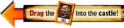
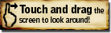

Волна
До волны

Перетащите миньона в замок или выберите его и нажмите на этаж. Защищайте кристаллы. Синие духи временно дают дополнительную ману. Esc, P или пробел — пауза.


Перетащите миньона в замок или выберите его и нажмите на этаж. Защищайте кристаллы. Синие духи временно дают дополнительную ману. Esc, P или пробел — пауза.

Для крыши укажи верх комнаты. У балкона голубая линия отмечает пол этажа, золотая — стык со стеной. Жёлтые клетки показывают наложение. Правый клик удаляет поставленный блок, Ctrl+Z отменяет последнее действие.